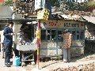
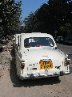

Calcutta 2004
Our real reason for travelling to Calcutta was for Neela and Ste's wedding, but we did have some time to explore and experience Calcutta during our one week stay.
This was our first trip and I'm sure we'll return. We found Calcutta to be a very intense place, very polluted (it makes London feel clean), but very friendly. Being one of only a few white faces in a City makes you stand out somewhat, and many people came up to us and introduced themselves (and sometimes their somewhat reluctant families), and we often walked along to the sounds of "Hello Madam, How are you?". The staring can be annoying, but is something that is just going to happen, and can be helped by dressing appropriately.
We did a lot of shopping - mainly to buy clothes and accessories for the wedding, but also for warm clothes as (typically) Calcutta was having it's coldest spell for 35 years and Calcutta is not a city designed for cold weather.
We managed to spend a few days doing touristy things. One day we had a pleasant walk across the Maidan to Eden Gardens and to the James Prinsep memorial. Another day we went to Belur Math (the headquarters of the Ramakrishna mission. Ramakrishna preached that all religions should be united. The building has 3 facades - one representing a church, one a temple and the other a mosque [no photography allowed]) and Dakshineswar Kali Temple (the temple where Ramakrishna was a priest). And on other days we visited the Victoria Memorial (an incredibly clean reminder of the British Raj which houses an interesting exhibition about the European colonisation of India) and also the Botanical Gardens (which contain plants from different corners of the globe).
All in all a really interesting trip. Of course the highlight was the wedding, but the rest of our time was enjoyable too - and we found India to be somewhere we'd like to return one day.
(44 images.)
Back to index
Eden Gardens - Burmese Pagoda |
Eden Gardens - Burmese Pagoda Detail |
James Prinsep Memorial - and Cricket |
James Prinsep Memorial - and Cricket II |
Street Traders |
Street Traders II |
Dakshineswar Kali Temple - stalls | 
Dakshineswar Kali Temple II |
Dakshineswar Kali Temple III |
Calcutta Street Scene |
Bangle shop |
Dominos pizza |
Men at rest |
Laden Bike | 
Milk booth |
An Ambassador car |

A line of Ambassadors |
Road Safety Week |
Tree Painting I |
Tree Painting II |
Victoria Memorial I |
Victoria Memorial II |
Victoria Memorial III |
Victoria Memorial IV |
Victoria Memorial V |
Men at work |
Victoria Memorial VI |
Watering the flowers |
Resurfacing the paths |
Botantical Gardens I |
Botantical Gardens II |
Botantical Gardens III |
Botantical Gardens IV |
Botantical Gardens V |
Outside the Victoria Memorial | 
Victoria Memorial VII |
Richard |
Victoria Memorial VIII |
Picnic |
Knife sharpening |
Typical shop |
Shopkeeper |
No Horn |
Sweet shop |
Back to index